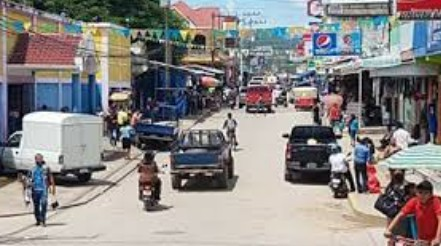

El Centro

Según se dice, posteriormente de una fuerte tormenta con fuertes lluvias,
los riachuelos se elevan, saltan al costado y empapan la tierra.
Posteriormente de la tormenta hay peces por todas partes.
La gente camina al aire libre con un balde y recoge los peces del
suelo. Los peces aún están vivos, y sin embargo son pequeños, son
lo adecuadamente grandes para comer.